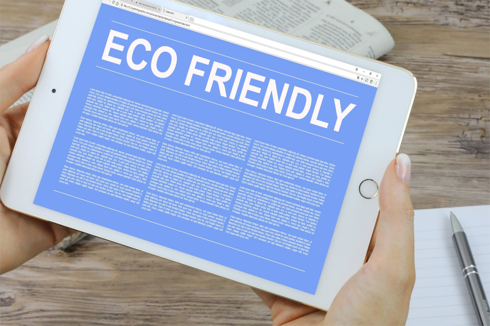

Welcome to SwapECO
Our Mission
Welcome to SwapECO, where our mission is to inspire and empower individuals to adopt sustainable living practices. We believe that small, conscious changes in our daily routines can collectively make a big impact on reducing our ecological footprint.
Our planet faces significant environmental challenges, from climate change to plastic pollution. Through education, resources, and actionable tips, we aim to guide you toward a greener lifestyle. Together, we can protect the Earth for future generations.
SwapECO is your resource hub for practical advice on sustainable living. Whether you’re exploring zero-waste practices, learning to shop responsibly, or making eco-friendly swaps in your home, we’re here to help every step of the way.
We also celebrate the collective power of community. By joining hands with like-minded individuals, you can share ideas, take action, and amplify the movement toward a greener planet.
We believe in progress, not perfection. Every step toward sustainability counts, and we’re excited to have you on this journey with us.